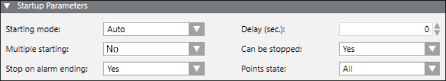

Startup Parameters

- Starting mode: Allows you to specify whether the alarm-triggered incident is dispatched with or without operator intervention. By default, the starting mode is Auto.
- Delay: Allows you to specify the time-delay (in seconds) that the system can wait before sending the notifications of incident. It is available only for the starting mode: Auto. By default, delay is 0. Delay can be incremented in multiple of 30s.
- Multiple starting: Allows you to specify whether the incident is repeated if the same event source triggers it again. By default, the multiple starting value is No.
- Can be stopped: Allows you to specify whether the operator can cancel the alarm-triggered incident before delay time lapses.
- Stop on alarm ending: Allows you to specify whether the incident stops when the alarm has been fully handled (that is, when the event disappears from Event List). Default value is Yes.
- Points state: Allows you to specify for what point states the incident is triggered. Default value is All.